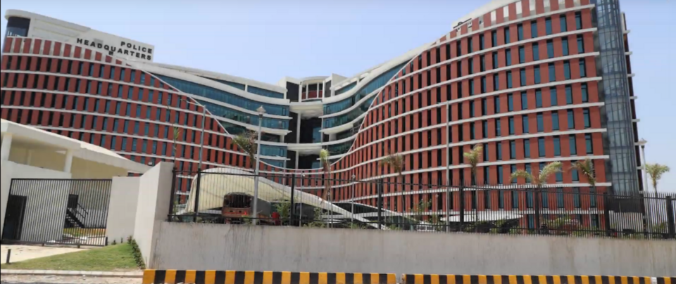

राष्ट्रीय
गोरखपुर हादसे पर अखिलेश यादव का बयान, शोक का नाटक समझ रही जनता
गोरखपुर में अखिलेश यादव के रोड शो के दौरान जेसीबी की चपेट में आने से एक किशोर की मौत के मामले में सियासत गरमा गई है। अखिलेश यादव ने इस घटना पर प्रतिक्रिया दी है।
राष्ट्रीयतमिलनाडु: टीवीके विधायक वीएस बाबू का 75 वर्ष की आयु में निधन
तमिलनाडु के कोलाथुर विधानसभा क्षेत्र से टीवीके विधायक वीएस बाबू का चेन्नई के एक अस्पताल में निधन हो गया। वह लंबे समय से सांस की बीमारी से पीड़ित थे और उनका इलाज चल रहा था।
राष्ट्रीयपंजाब में बीजेपी अकेले बनाए सरकार, किसी का बैगेज न लें: रवनीत सिंह बिट्टू
टीवी9 के सत्ता सम्मेलन में बीजेपी नेता रवनीत सिंह बिट्टू ने कहा कि पंजाब में पार्टी को अकेले सरकार बनानी चाहिए। उन्होंने कहा कि गठबंधन का फैसला शीर्ष नेतृत्व को करना है, लेकिन वर्तमान निर्देश सभी 117 सीटों पर तैयारी करने के हैं।

राष्ट्रीयफतेहपुर में भ्रष्टाचार और लापरवाही के आरोप में 11 पुलिसकर्मी निलंबित
उत्तर प्रदेश के फतेहपुर जिले में एसपी ने एक हफ्ते के भीतर भ्रष्टाचार और लापरवाही के आरोपों में 11 पुलिसकर्मियों को निलंबित किया है और तीन थानेदारों को लाइन हाजिर किया है।
राष्ट्रीयगोरखपुर में सीएम योगी आदित्यनाथ का सपा और विपक्ष पर तीखा हमला
उत्तर प्रदेश के मुख्यमंत्री योगी आदित्यनाथ ने गोरखपुर दौरे पर समाजवादी पार्टी और माफिया गतिविधियों पर तीखा प्रहार किया। उन्होंने अपराधियों को कड़ी चेतावनी दी है।
राष्ट्रीयबिहार के अररिया में अनियंत्रित स्कॉर्पियो नहर में गिरी, छह लोगों की मौत
बिहार के अररिया जिले में बुधवार रात एक तेज रफ्तार स्कॉर्पियो के नहर में गिरने से बड़ा हादसा हो गया। इस दुर्घटना में छह लोगों की मौत हो गई, जबकि एक अन्य व्यक्ति घायल हो गया है।
राष्ट्रीयपंजाब में भाजपा अध्यक्ष के बयान पर विवाद, आप और कांग्रेस ने जताया विरोध
भाजपा अध्यक्ष नितिन नवीन के पंजाब दौरे के दौरान दिए गए बयान पर राजनीतिक घमासान शुरू हो गया है। आप और कांग्रेस ने सेना को राजनीति में घसीटने का आरोप लगाया है।
 राष्ट्रीय
राष्ट्रीयसुप्रीम कोर्ट ने आज़म खान की अंतरिम जमानत पर रोक लगाने से किया इनकार
सुप्रीम कोर्ट ने मनी लॉन्ड्रिंग मामले में सपा नेता आज़म खान को मिली अंतरिम जमानत पर रोक लगाने से इनकार कर दिया है। हालांकि, अदालत ने स्पष्ट किया कि हाई कोर्ट की टिप्पणियों का अंतिम फैसले पर असर नहीं पड़ेगा।
राष्ट्रीयकुलगाम में लश्कर कमांडर मोहम्मद लतीफ भट ढेर, चिनाब घाटी में आतंकवाद को बड़ा झटका
दक्षिण कश्मीर के कुलगाम में सुरक्षाबलों ने 15 लाख रुपये के इनामी लश्कर-ए-ताइबा कमांडर मोहम्मद लतीफ भट को मार गिराया है। अधिकारियों के अनुसार इससे चिनाब घाटी और पीर पंजाल क्षेत्र में आतंकवाद को बड़ा झटका लगा है।
 राष्ट्रीय
राष्ट्रीयकेरल हाईकोर्ट का निर्देश: सरकारी दस्तावेजों में गोद लिए बच्चे को लिखें सिर्फ बेटा या बेटी
केरल हाईकोर्ट ने राज्य सरकार को निर्देश दिया है कि कानूनी वारिस प्रमाणपत्र में बच्चे के आगे 'गोद लिया हुआ' न लिखा जाए। कोर्ट ने कहा कि ऐसे बच्चों को भी जैविक संतान के समान कानूनी दर्जा मिलना चाहिए।
राष्ट्रीयलश्कर कमांडर मोहम्मद लतीफ भट को सुरक्षा घेरे में कुपवाड़ा में दफनाया गया
कुलगाम मुठभेड़ में मारे गए लश्कर-ए-तैयबा के स्थानीय कमांडर मोहम्मद लतीफ भट के शव को परिजनों की मौजूदगी में उसके पैतृक घर से करीब 160 किलोमीटर दूर कुपवाड़ा की बंगस वैली में दफना दिया गया।